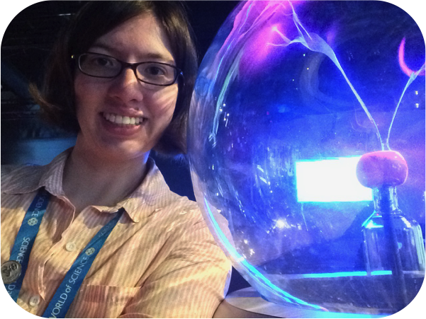

Meeting format
Join us on November 3rd and 4th for Astronomy Northwest by Southwest 2018 (Astro NWxSW 2018; formerly Northwest Astronomy Meeting). This two-day meeting, held in Vancouver, BC, seeks to bring together astronomers from around Cascadia to promote discussions, highlight the wide range of science conducted in the region, and to help foster local science networks.
Program
Our program consists of invited talks, contributed talks and posters, and splinter sessions. Saturday coffee breaks will be catered but all other meals are not (list of campus food options will be available).| Saturday Nov 3 | Sunday Nov 4 | ||
| 9:00 - 10:30 | Invited talk and 5 contributed talks | 9:00 - 10:06 | Invited talk and 3 contributed talks |
| 10:30 - 11:00 | Catered coffee break | 10:06 - 10:21 | Short break and poster removal |
| 11:00 - 12:30 | Invited talk, 3 contributed talks and poster slams | 10:21 - 11:45 | 7 contributed talks |
| 12:30 - 13:45 | Lunch (on own) and poster viewing | 11:45 - 12:45 | Lunch (on own) |
| 13:45 - 15:15 | Invited talk and 5 contributed talks | 12:45 - 15:00 | Splinter sessions and workshops |
| 15:15 - 15:45 | Catered break and poster viewing | ||
| 15:45 - 16:45 | 5 contributed talks | ||
| 16:45 - 18:00 | Poster session | ||
| 18:00 | Dinner (on own) | ||
Contributed talks and posters
Contributed talks will be 9 minutes long with 3 minutes for questions/computer exchange. In preparation, please keep in mind that people at the conference will represent a wide range of astronomy subfields. There will also be a range of career stages represented at the meeting (including astronomy undergraduates). The presentation room will have VGA and HDMI connectivity; we ask that you bring your own dongle if you wish to use your laptop. There will also be a Windows machine available in the conference room.More information on poster sizing will be forthcoming and sent to all poster presenters
Splinter and Workshop sessions
We are excited to offer two splinter/workshop sessions as an experiment for this year on Sunday afternoon. Please see the Splinters/Workshops page for more information on the Planetary Science Splinter Session and the Github Tutorial Workshop as well as how to register your interest for these sessions.Invited reviews
Invited review talks will be 25 minutes long with 5 minutes for questions/computer exchange. Click on the speakers' images below to go to their research webpages.| Deborah Good (UBC) | Sarah Greenstreet (UW) | Alan McConnachie (NRC/UVic) | Henry Ngo (NRC) |
|  | |||
| Early Science Results from CHIME/FRB | Near-Earth Asteroids on Retrograde Orbits | The Canada France Imaging Survey | Photons wanted: Challenges of direct imaging searches for planets |